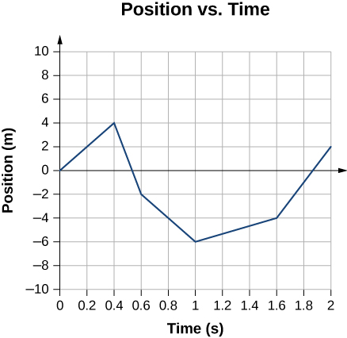

The motion of a particle in one dimension can be described using the function x(t) that gives its position at any time. Its velocity is defined by the derivative $v=\dfrac{dx}{dt}$.
From the definition, we see that the SI units of velocity are meters per second, m/s. Positive and negative signs indicate the direction of motion, relative to the direction that is arbitrarily called positive when we pick our coordinate system. In the case of constant velocity, we have $v=\dfrac{\Delta x}{\Delta t}$, where the notation Δ (Greek uppercase “delta,” like Latin “D”) means “change in,” or “final minus initial.” When the velocity is not constant, this equation is false, although the quantity $\dfrac{\Delta x}{\Delta t}$ can be interpreted as a kind of average velocity.
Velocity can only be defined if we choose some arbitrary reference point that we consider to be at rest. Therefore velocity is relative, not absolute. A person aboard a cruising passenger jet might consider the cabin to be at rest, but someone on the ground might say that the plane was moving very fast — relative to the dirt.
The acceleration of a particle is defined as the time derivative of the velocity, or the second derivative of the position with respect to time $a=\dfrac{dv}{dt}=\dfrac{d^2x}{dt^2}$
Unlike velocity, acceleration is not just a matter of opinion. Observers in different inertial frames of reference agree on accelerations. An acceleration is caused by the force that one object exerts on another.
Circular motion requires a force with a component toward the center of the circle. Uniform circular motion is the special case in which the speed is constant. In uniform circular motion, the acceleration vector is toward the center, and therefore total force acting on the object must point directly toward the center.
We can define the angular velocity ω, which is the number of radians per second by which the object’s angle changes, $\omega=\dfrac{d\omega}{dt}$. For uniform circular motion, ω is constant, and the magnitude of the acceleration is $a=\omega^2r=\dfrac{v^2}{r}$ where r is the radius of the circle. These expressions can also be related to the period of the rotation T, which is the time for one revolution. We have $\omega=\dfrac{2\pi}{T}$
Show that the expression ω2r has the units of acceleration. On a 30 km bike ride, you ride the first 10 km at an average speed of 8 km/hour. What average speed must you have over the next 12km if your average speed for the whole ride is to be 18 km/hour? An object starts moving at t = 0, and its position is given by x = At5 − Bt2, where t is in seconds and x is in meters. A is a non-zero constant.
Infer the units of A and B.
Find the velocity as a function of t.
What is the average velocity from 0 to t as a function of time?
At what time t (t > 0) is the velocity at t equal to the average velocity from 0 to t?
You’re standing on the roof of a building, which is 13.0 meters above the ground. You have a rock in your hand, which you can throw with a maximum speed of 12.0 m/s.
How long would it take for the rock to hit the ground if you released the rock from rest?
How long would it take for the rock to hit the ground if you threw the rock straight downward?
How long would it take for the rock to hit the ground if you threw the rock straight upward?
If you threw the rock straight upward, how high would it get above the ground?
If the acceleration due to gravity on a planet is $\frac{1}{4}$ that on Earth, how many times longer does it take for a rock to drop the same distance on the planet? The graph below represents the motion of a ball that rolls up a hill and then back down. When does the ball return to the location it had at t = 0? Also, express the velocity and acceleration as functions of time.
Express the chain rule in Leibniz (“d”) notation, and show that it always results in an answer whose units make sense.
An object has a position as a function of time given by x = Acos (bt), where A and b are constants. Infer the units of A and b, and interpret their physical meanings.
Find the velocity of this object, and check that the chain rule has indeed given an answer with the right units.
A honeybee’s position as a function of time is given by x = 10t2 − t5, where t is in seconds and x in meters. What is its velocity at t = 3.0s? Assume you are an astronaut, and you’ve arrived on some planet P, which has no atmosphere. You drop a hammer from a height of 1.00 m and find that it takes 10ms to fall to the ground. What is the acceleration due to gravity on the planet P? Objects A and B, with v(t) graphs shown in the figure, both leave the origin at time t = 0s. When do they cross paths again?
Starting from rest, a ball rolls down a ramp, traveling a distance L and picking up a final speed v. How much of the distance did the ball have to cover before achieving a speed of $\dfrac{v}{2}$? You climb half-way up a tree, and drop a rock. Then you climb to the top, and drop another rock. How many times greater is the velocity of the second rock on impact? Some fleas can jump as high as 30cm. The flea only has a short time to build up speed — the time during which its center of mass is accelerating upward but its feet are still in contact with the ground. Make an order-of-magnitude estimate of the acceleration the flea needs to have while straightening its legs, and state your answer in units of g, i.e., how many “g’s it pulls.”(For comparison, fighter pilots black out or die if they exceed about 5 or 10 g’s.) A person is parachute jumping. During the time between when she leaps out of the plane and when she opens her chute, her altitude is given by an equation of the form
$$y=b-c(t+ke^{\frac{-t}{k}}),$$
where e is the base of natural logarithms, and b, c, and k are constants. Because of air resistance, her velocity does not increase at a steady rate as it would for an object falling in vacuum.
What units would b, c, and k have to have for the equation to make sense?
Find the person’s velocity, v, as a function of time. [Hint: $\dfrac{d e^x}{dx}=e^x$]
Use your answer from part (b) to get an interpretation of the constant c. [Hint: e − x approaches zero for large values of x.]
Find the person’s acceleration, a, as a function of time.
Use your answer from part (d) to show that if she waits long enough to open her chute, her acceleration will become very small.
Can centripetal acceleration change the speed of a particle undergoing circular motion? What about tangential acceleration? An object that is thrown straight up falls back to Earth. This is one-dimensional motion.
When is its velocity zero?
Does its velocity change direction?
Does the acceleration have the same sign on the way up as on the way down? Why?
Sketch the velocity-versus-time and acceleration-versus-time graph from the following position-versus-time graph.

Blood is accelerated from rest to 32.0 cm/s in a distance of 2.00 cm by the left ventricle of the heart.
Make a sketch of the situation, i.e., plot the x − t graph.
How long does the acceleration take?
Is the answer reasonable when compared with the time for a heartbeat?
A motorcycle that is slowing down uniformly covers 2.0 successive km in 80 s and 120 s, respectively.
What is the acceleration of the motorcycle?
What is its velocity at the beginning and end of the 2-km trip?
Abel is whirling a brick tied to the end of a rope. The rope makes an angle θ with respect to the horizontal, and the brick undergoes circular motion with radius R.
What is the speed of the brick?
Check that the units of your answer to part a make sense.
Check that the dependence of your answer on the variables makes sense, and comment on the limit θ → 0.
The position of a particle is r⃗(t) = (3.0t2î + 5.0ĵ − 6.0tk̂)m
Determine its velocity and acceleration as functions of time.
What are its velocity and acceleration at time t = 0?
A particle travels in a circle of radius 12 m at a constant speed of 24 m/s. What is the magnitude of the acceleration? A fan is rotating at a constant 360.0 rev/min. What is the magnitude of the acceleration of a point on one of its blades 12.0 cm from the axis of rotation? An experimental jet rocket travels around Earth along its equator just above its surface. At what speed must the jet travel if the magnitude of its acceleration is g? A geosynchronous satellite orbits Earth at a distance of 42,250.0 km and has a period of 1 day. What is the centripetal acceleration of the satellite? A truck is traveling east at 80 km/h. At an intersection 32 km ahead, a car is traveling north at 50 km/h. How long after this moment will the vehicles be closest to each other and how far apart will they be at that point?